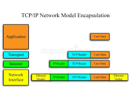

TCP/IP is the fundamental communication protocol used on the internet. It ensures data is transmitted correctly between devices.
TCP handles data delivery and reliability, while IP manages addressing and routing of data packets.